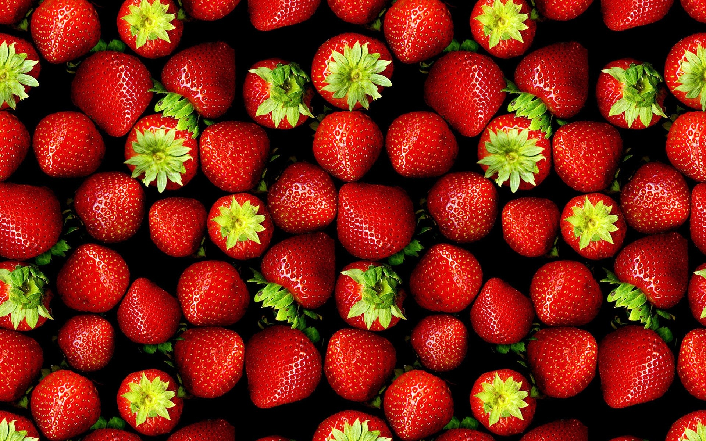

A medium-sized banana will provide around 320-400 mg of potassium, which meets about 10% of your daily potassium needs.Potassium helps your body maintain a healthy heart and blood pressure. In addition, bananas are low in sodium. The low sodium and high potassium combination helps to control high blood pressure.

Strawbarries
Who doesn't like Strawberries? They are a good source of vitamin C, manganese, folate (vitamin B9), and potassium. They contain small amounts of several other vitamins and minerals..
Kiwi
This exotic fruit is loaded with dietary fiber, which helps in the prevention of numerous diseases. According to a study done by the University of Leeds, “Increasing consumption of fibre-rich foods can lower risks of both cardiovascular disease (CVD) and coronary heart disease (CHD).” According to researchers at the University of Massachusetts Medical School, high fiber foods keep one full for longer and control metabolic markers like blood pressure, cholesterol and blood sugar. It also facilities weight loss and is often recommended to diabetics.
Eating a healthy diet is not about strict limitations, staying unrealistically thin, or depriving yourself of the foods you love. Rather, it’s about feeling great, having more energy, improving your health, and boosting your mood.
Healthy eating doesn’t have to be overly complicated. If you feel overwhelmed by all the conflicting nutrition and diet advice out there, you’re not alone. It seems that for every expert who tells you a certain food is good for you, you’ll find another saying exactly the opposite.
The truth is that while some specific foods or nutrients have been shown to have a beneficial effect on mood, it’s your overall dietary pattern that is most important
The cornerstone of a healthy diet should be to replace processed food with real food whenever possible. Eating food that is as close as possible to the way nature made it can make a huge difference to the way you think, look, and feel.
By using these simple tips, you can cut through the confusion and learn how to create—and stick to—a tasty, varied, and nutritious diet that is as good for your mind as it is for your body.
Hover to see "Benefits of Apples"
Apples can do a lot for you, thanks to plant chemicals called flavonoids. And they have pectin, a fiber that breaks down in your gut. If you take off the apple’s skin before eating it, you won’t get as much of the fiber or flavonoids.
The fiber can slow digestion so you feel fuller after eating. This can keep you from overeating. Eating fiber-rich foods helps control symptoms and lessens the effects of acid reflux. An apple’s fiber can also help with diarrhea and constipation.
Some studies show that plant chemicals and the fiber in an apple peel protect against blood vessel and heart damage. They also can help lower your cholesterol, and they might protect your cells’ DNA from something called oxidative damage, which is one of the things that can lead to cancer.
Research shows the antioxidants in apples can slow the growth of cancer cells. And they can protect the cells in your pancreas, which can lower your chances of type 2 diabetes.
Scientists also give apples credit for helping:
Your lung strength
Weight loss
Your brain (easing symptoms of Alzheimer’s disease and age-related memory loss.
Healthy Food reduces cancer risks.
While some extreme diets may suggest otherwise, we all need a balance of protein, fat, carbohydrates, fiber, vitamins, and minerals in our diets to sustain a healthy body. You don’t need to eliminate certain categories of food from your diet, but rather select the healthiest options from each category.
However, diets rich in fruits and vegetables may help to protect against cancer.
In a separate study from 2014, researchers found that a diet rich in fruits reduced the risk of cancers of the upper gastrointestinal tract.
The truth is that while some specific foods or nutrients have been shown to have a beneficial effect on mood, it’s your overall dietary pattern that is most important
Many phytochemicals found in fruits, vegetables, nuts, and legumes act as antioxidants, which protect cells from damage that can cause cancer. Some of these antioxidants include beta-carotene, lycopene, and vitamins A, C, and E.
Trials in humans have been inconclusive, but results of laboratory and animal studies have linked certain antioxidants to a reduced incidence of free radical damage associated with cancer.
Hover to see "Benefits of eat"
Meat is actually one of the most beneficial food in the entire world, And we will be explaining why in a while.
First of all it provides L-carnitine which is an amino acid that occurs naturally in meat products, L-carnitine plays a part in fat metabolism. As part of this, L-Carnitine does the job of transporting fats into our mitochondria for burning.It’s important to clarify that our body can synthesize sufficient amounts of L-carnitine for general needs; this makes it a non-essential amino acid.Beef is Extremely Rich in Minerals, Meat Contains Calcuim, Copper, Iron, Manganese, Potassium , Phosphorus.
Research shows the antioxidants in apples can slow the growth of cancer cells. And they can protect the cells in your pancreas, which can lower your chances of type 2 diabetes.
Eating Beef Helps Prevent Iron Deficiency Anemia, In a developed country such as the United States, nutrient deficiencies shouldn’t be a cause of death, yet anemia kills thousands every year, One of the best health benefits of beef meat is that it contains a substantial amount of heme iron.
Beef is also Extremely Rich in Minerals
Meniral Name
RDA
Calcuim
4
Copper
8
Iron
26
Manganese
2
Potassium
18
Zinc
72
This Map will give us move info about the benefits.


FIND US ON SOCIAL MEDIA